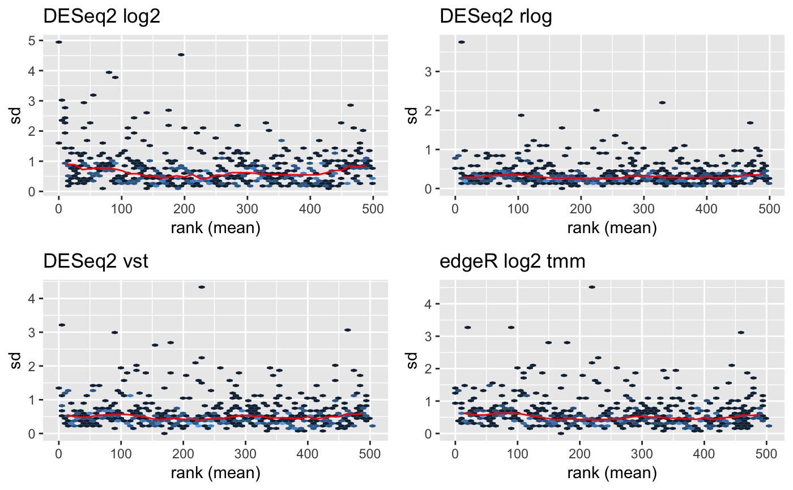

Plot row standard deviations vs. row means
plotMeanSD(object, ...) # S4 method for bcbioRNASeq plotMeanSD( object, fill = ggplot2::scale_fill_gradient(low = acidplots::lightPalette[["gray"]], high = acidplots::lightPalette[["purple"]]), lineColor = acidplots::lightPalette[["orange"]], legend = getOption(x = "acid.legend", default = TRUE) )
| object | Object. |
|---|---|
| fill |
To set the discrete fill palette globally, use: options(acid.fill.discrete = ggplot2::scale_fill_viridis_d()) |
| lineColor |
|
| legend |
|
| ... | Additional arguments. |
ggplot.
vsn::meanSdPlot() wrapper that plots count transformations on a log2 scale.
DESeq2 log2: log2 library size factor-adjusted normalized counts.
DESeq2 rlog: regularized log transformation.
DESeq2 VST: variance-stabilizing transformation.
edgeR log2 TMM: log2 trimmed mean of M-values transformation.
Requires the vsn package to be installed.
Updated 2019-10-30.
